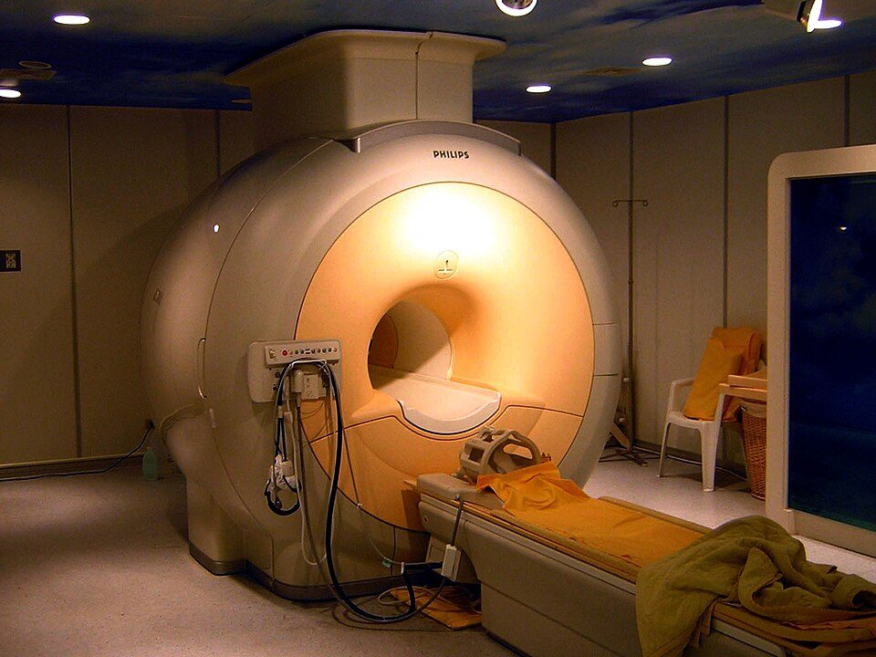

What it is
Magnetic resonance imaging (MRI) produces images of the body using a very powerful magnet and radio waves, without ionising radiation. The protons in the water of the tissues line up with the magnetic field; when they receive a radio pulse they are knocked out of alignment and, as they return, they emit a signal that the computer turns into an image. Because each tissue contains a different amount of water and fat, MRI distinguishes the structures of the brain in great detail. The first human images were obtained in the late 1970s, and Paul Lauterbur and Peter Mansfield received the Nobel Prize in 2003.


Sequences
An MRI scan is not a single picture, but several sequences that highlight different things:
| Sequence | What it shows best |
|---|---|
| T1 | Anatomy; with gadolinium, active lesions, tumours, inflammation |
| T2 and FLAIR | White matter lesions, swelling, multiple sclerosis plaques |
| Diffusion | Acute infarct within minutes; abscesses |
| Gradient echo / SWI | Old blood, microbleeds, calcium |
| MR angiography | Arteries and veins, with or without contrast |
| Spectroscopy | Chemical composition of a lesion |
| Functional MRI | Areas that activate during a task (language, movement) |
| Tractography | White matter tracts (connectome) |
What it is used for
It is the most complete imaging test in neurology:
- Multiple sclerosis: it is key to diagnosis and follow-up, and shows new lesions before they cause symptoms. Also in neuromyelitis optica and transverse myelitis.
- Stroke: diffusion detects small infarcts that CT misses, and allows patients with an unknown time of onset to be treated. See stroke code.
- Epilepsy: looks for the lesion causing the seizures (hippocampal sclerosis, dysplasias).
- Brain tumours: size, relationship with important areas and surgical planning.
- Dementias: atrophy of the hippocampus in Alzheimer's, vascular lesions, typical patterns of other dementias and of Creutzfeldt-Jakob.
- Spinal cord and spine: herniated discs, compression, myelopathies, Chiari.
- Cerebral venous thrombosis, intracranial hypertension, encephalitis.
How it is done
The patient lies on a couch that slides into a tube. It takes 20 to 45 minutes. It is noisy (earplugs or headphones are provided) and you need to keep very still. Sometimes gadolinium is injected into a vein.
- If you have claustrophobia, say so: a mild relaxant can be given or more open scanners can be used.
- Young children usually need sedation.
Safety: very important
The magnet is always on and strongly attracts metal objects. Before going in you must mention:
- Pacemakers and defibrillators: many modern ones are conditionally compatible, but this must be checked.
- Cochlear implants, neurostimulators, medicine pumps.
- Old aneurysm clips, programmable shunt valves (they can be reprogrammed).
- Metal fragments in the eyes (metalworkers) or shrapnel.
- Pregnancy: MRI without contrast is considered safe in any trimester when it is needed, and is preferred to CT because it uses no radiation. Gadolinium is avoided unless essential, because it crosses the placenta. Always say if you are or might be pregnant.
- Tattoos and permanent make-up can warm up slightly.
Gadolinium is safe in the vast majority of cases; in severe kidney failure it is used with caution, and small amounts are known to remain deposited in the brain with no known effect.
Limitations
It is slower, more expensive and less available than CT, and less good for bone and very fresh blood. MRI also detects many incidental findings (small white matter lesions, cysts) that are almost never important and should not cause alarm.
Recent guidelines and documents (2024-2026)
- Montalban X, et al. Diagnosis of multiple sclerosis: 2024 revisions of the McDonald criteria. Lancet Neurol. 2025;24:850-65. Link. New diagnostic criteria (optic nerve, central vein sign, kappa free light chains).
Sources
- Atlas SW. Magnetic Resonance Imaging of the Brain and Spine. 5th ed. Wolters Kluwer; 2016.
- Thompson AJ, et al. Diagnosis of multiple sclerosis: 2017 revisions of the McDonald criteria. Lancet Neurol. 2018;17:162-73.
- Thomalla G, et al. MRI-guided thrombolysis for stroke with unknown time of onset (WAKE-UP). N Engl J Med. 2018;379:611-22.
- Kanal E, et al. ACR guidance document on MR safe practices. J Magn Reson Imaging. 2013;37:501-30.